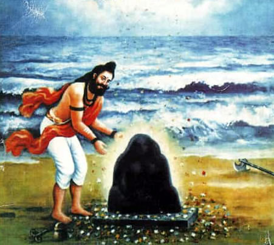
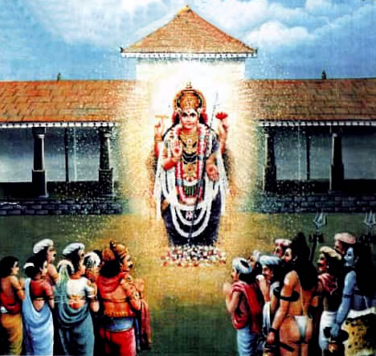

IMAGES AND VIDEOS


_l.jpg)
TEMPLE HISTORY
In Tulunadu, in the 10th century, Kundavarma, the most famous king of Alupa dynasty was ruling. Mangalore was the capital of his kingdom. At that time, there came two sages named Machhendranatha and Gorakanatha from Nepal. They reached Mangalapura, crossing the river Nethravathi. The place were they crossed the river came to be known as ‘Gorakdandu’. They chose a place near the bank of Nethravathi which was once the centre of activities of sage Kapila. He had his hermitage there and it was a great centre of education.
Hearing about the arrival of the two saints the king came to meet them. Introducing himself as the king of Tulunadu he paid them his respects and offered all help and patronage. Pleased with the humility and virtues of the king they brought to his knowledge that his kingdom was a holy place and it was sanctified by the activities of holy saints and sages in the past. They requested him to grant them land so that they could build their hermitage and make it a centre of their religious activities under his protection and patronage.

For Kundavarma it was really a surprise to know that his land had such a hoary history. It was from these saints he came to know that once upon a time, in his land there existed a temple dedicated to mother Mangaladevi. He heard from them the story of Vikhasini, Andasura, Parashurama and the temple of Mangaladevi built by Parashurama. The two saints took the king to the places where all these historical events had taken place. They asked the king to dig the place and retrieve the Linga and the Dharapatra symbolising Mangaladevi and install them in a shrine along with Nagaraja for protection.
Kundavarma carried out the advice of the two sages. A grand shrine of Sri Mangaladevi stood on the holy place. The two sages themseleves guided and supervised the execution of the work. The temple attained special significance as Mother Magaladevi granted special favours, especially on maidens. Pious maidens who worship the goddess observing Mangaladharavrata (Swayamvara Parvathi) will heave their wishes fulfilled. They get husbands most suited for them.
Even today, heads of Kadri Yogirajmutt visit Mangaladevi temple on the first day of Kadri temple festival and offer prayer and silk cloth to the Goddess.
| Days | Morning | Evening |
|---|---|---|
| mon | 6am to 1pm | 4pm to 10pm |
| tue | 6am to 1pm | 4pm to 10pm |
| wed | 6am to 1pm | 4pm to 10pm |
| thu | 6am to 1pm | 4pm to 10pm |
| fri | 6am to 1pm | 4pm to 10pm |
| sat | 6am to 1pm | 5pm to 9.30pm |
| sun | 6am to 12.30pm | closed |